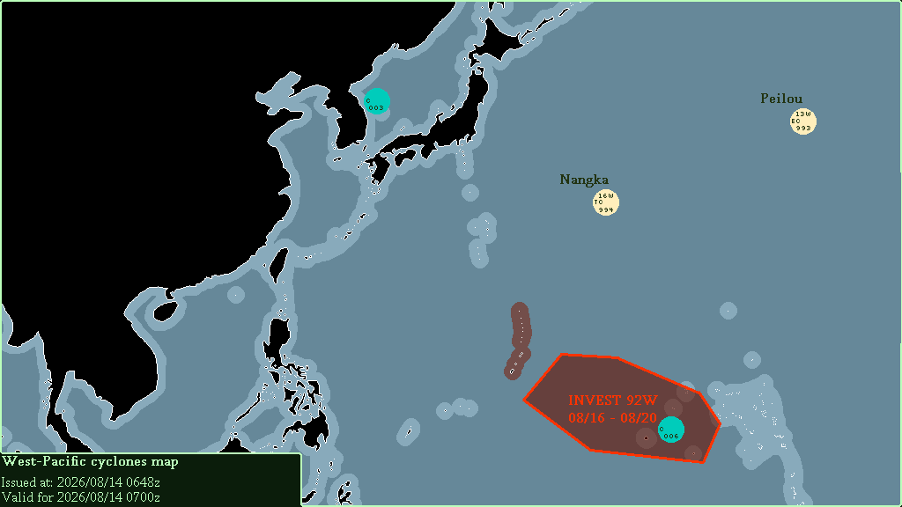

| CYCLONE NAME | PRESSURE | LOCATION | LAT, LON | MOVING TOWARDS |
|---|---|---|---|---|
| 16W NANGKA | 1005 | E of Ogasawara Islands, N of Marshall Islands | 27°N, 166°E | E |
| C02 | 1004 | W of South Korea | 36°N, 126°E | N |
| C03 | 1005 | SE of North Korea | 39°N, 129*E | N |
| DEVELOPMENT NAME | PRESSURE | LOCATION | LAT, LON | MOVING TOWARDS | DEVELOPMENT TIMESPAN |
|---|---|---|---|---|---|
| INVEST 92W | 1007 | SE of Northern Mariana Islands, W of Marshall Islands | 10°N, 157*E | +++ | 2026/08/19 - 2026/08/21 |
| INVEST 94W | 1002 | E of Luzon (PH), W of Northern Mariana Islands | 18°N, 133*E | NW | 2026/08/18 - 2026/08/19 |